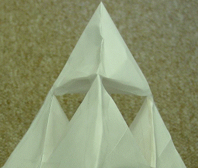
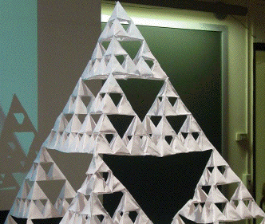

|  |  |
| This is not plausibly fractal: it is a shape made of four tetrahedra, but the tetrahedra have no substructure. | This is more believably fractal: the structure has four levels of substructure. Click for the whole picture. |
Return to Things that look like fractals but aren't.